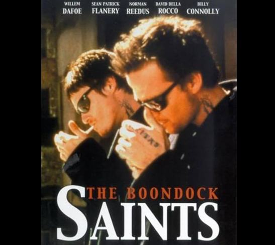
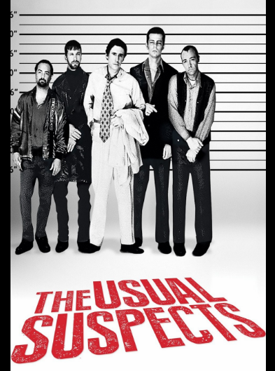
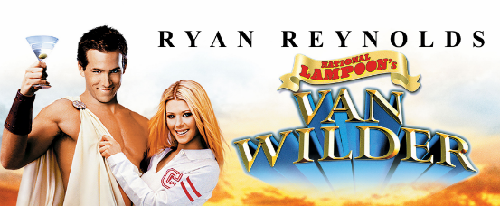

Two Irish brothers in Boston decide it's time to take the law into their own hands after seeing how corrupt the mob has made their city.

A key figure in the criminal underworld, Verbal Kint, tells the story of how he became involved with a group of criminals and how their plan went wrong.

A college student who is given the chance to live in a luxurious dormitory, but must deal with the consequences of his actions.